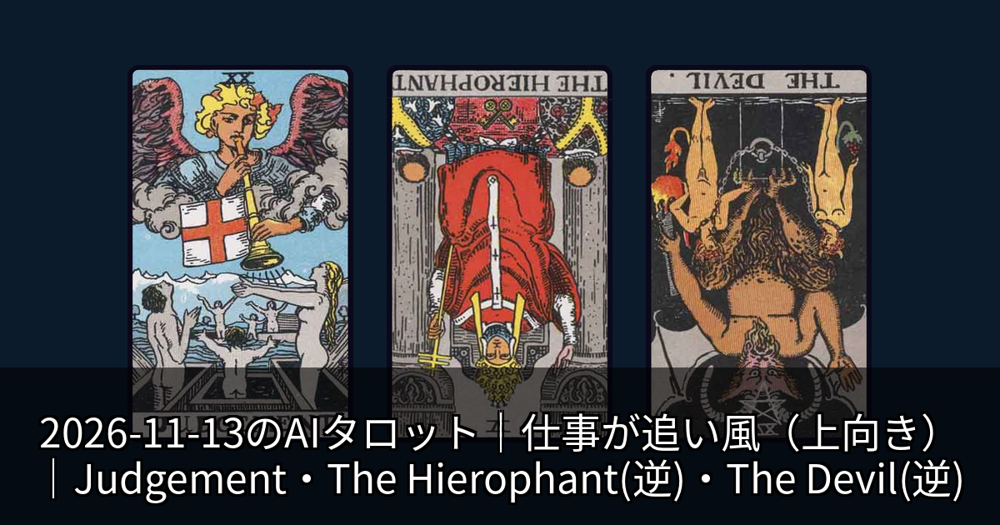

本文
# 2026-11-14のAIタロット｜恋愛が追い風（フラット）｜Justice(逆)・The Empress・The Star 対象: **全体運**（日付: 2026-11-14） ## 今日のスコア（1〜5） - 恋愛運: **4** ★★★★☆ - 仕事運: **2** ★★☆☆☆ - 金運: **3** ★★★☆☆ - 健康運: **4** ★★★★☆ ## 今日のタロット（3枚） - **Justice**（逆位置） - **The Empress**（正位置） - **The Star**（正位置） ## ラッキー - 色: **紫** - アイテム: **ハンカチ** ## まとめ 平均3.2（フラット）。特に『love』が追い風。カード：Justice（逆）, The Empress, The Star。 ## 一言アドバイス - **恋愛**: 【love】鍵は「攻めの一手×公平・対等（課題／逆位置）」。今日は笑顔を増やすの一歩を。周囲との調整も忘れずに。 - **仕事**: 【work】慎重さ×育成・豊かさの流れ。約束を守ると、焦らず足元固めを意識すると運気が伸びます。 - **金運**: 【money】鍵は「整える×長期的吉」。今日は欲しい物を一つに絞るの一歩を。やり過ぎ注意も忘れずに。 - **健康**: 【health】鍵は「攻めの一手×潤い」。今日は水分補給を意識するの一歩を。周囲との調整も忘れずに。 --- ※ 本記事はAI生成のエンタメ占いです。参考程度にお楽しみください。 （タグ）占い / タロット / AI占い / 今日の運勢 / Justice / The Empress / The Star / 恋愛運